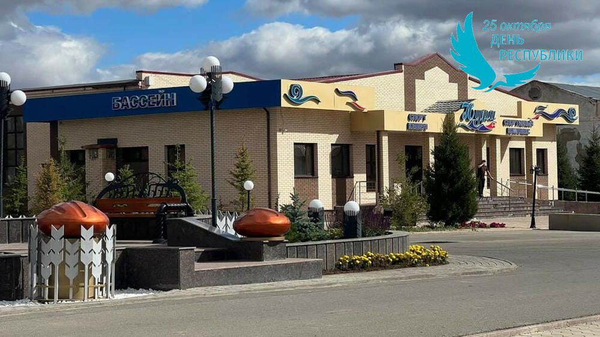

Крытый плавательный бассейн «Нура» в селе Шахтёрском — это профессиональный спортивный объект, построенный за счет собственных средств ТОО «Шахтёрское» под руководством Георгия Прокопа в рамках социальной ответственности бизнеса. Общая площадь специализированного здания составляет 924 кв. м.

Крытый плавательный бассейн «Нура» в селе Шахтёрском — это профессиональный спортивный объект, построенный за счет собственных средств ТОО «Шахтёрское» под руководством Георгия Прокопа в рамках социальной ответственности бизнеса. Общая площадь специализированного здания составляет 924 кв. м.
Бассейн является центральным водноспортивным комплексом для жителей всего Нуринского района, где тренируются ученики местной Детско-юношеской спортивной школы (ДЮСШ) и проводятся районные соревнования.